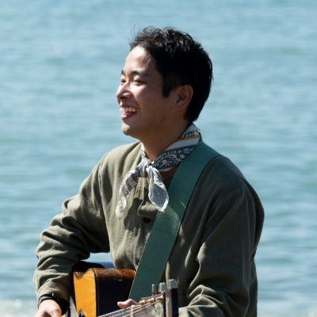
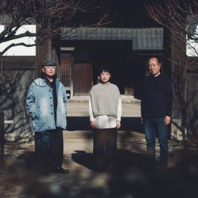
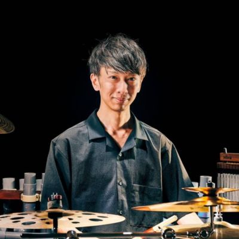
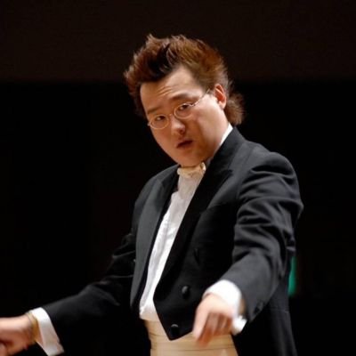
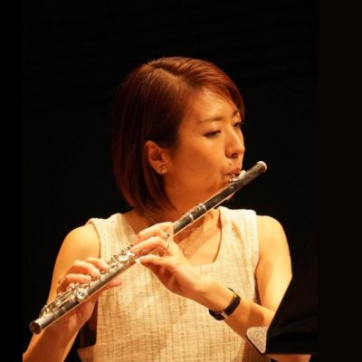
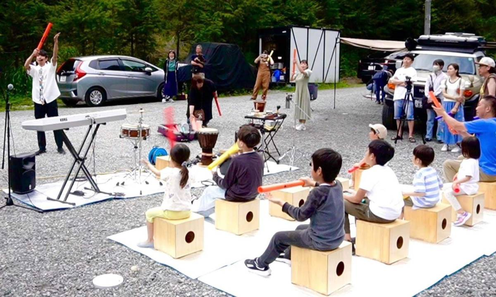
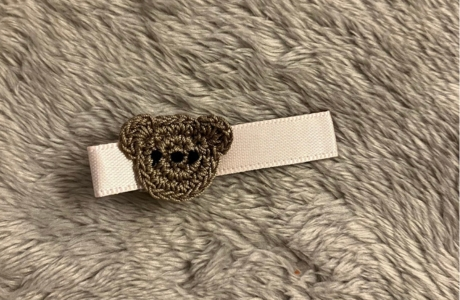

地産地★SHOW
～みんなでつくる芸術祭～
- 演奏
- 14:00～
- ワークショップ
- 12:00～
「地元アーティストと市民が創るみんなの芸術祭」
引っ込み思案だった僕が初めて輝けたのは音楽だった。
富士見市内の小学校での音楽会。
本番までみんなで一生懸命に練習して、大喝采を浴びたステージ。
きてくれた人たちの笑顔。
その光景が忘れられなくて今も表現を続けているんだなぁと感じます。
地産地★SHOWに参加するには?
- 演奏を聴く
- 富士見市などで活躍するアーティストが素敵な音楽をお届けします。
主なアーティストについてはこちら - 出演する
- コーラスグループやクロスオーバーアンサンブルで出演することができます。詳細はお問い合わせください。
- ワークショップに参加する
- ホワイエ（マルチホール隣のエリア）では、お子様も楽しめる様々なワークショップが予定されています。あわせて、各種芸術作品の展示も行われます。
ワークショップについてはこちら - 協賛して応援する
- このイベントを応援してくださる方を大募集しています。
協賛金で応援いただいた方は、当日配布するパンフレットにてご紹介させていただきます。詳細はお問い合わせください。
主なアーティスト
-

千葉 純平
埼玉県富士見市出身。一児の父。シンガーソングライター。中学高校の芸術鑑賞会から幕張メッセ、高級ホテル、障がい者高齢者施設までたくさんのステージを経験。
現在アスク・ミュージックに所属しあおぞらワッペンのメンバーとして全国の幼稚園保育園等のステージに立つ傍ら、音楽教室うたのアトリエ輪と和を大江友海とともに主宰。 -

ゆふづつ（ Vo大江友海 gt江森孝之 ba西村直樹 ）
ヴォーカル大江友海、ギター江森孝之、コントラバス西村直樹によるアコースティック音楽トリオ。
メンバーそれぞれが様々な音楽シーンで磨いてきた色彩豊かな表現力で、オリジナル曲をはじめ、抒情歌や異国のトラディショナル・ソングを独自アレンジで演奏する。 -

赤羽 拓真
武蔵野音楽大学卒業。2015年はニューヨーク滞在。日本テレビ「ヒルナンデス!」での演奏や土屋アンナ、加藤和樹、岡田亮輔、天寿光希、中井智彦、宮澤佐江、パックン、藤森慎吾、坂田おさむ、神崎ゆうこ、新沢としひこ等の各氏と共演。
著書に「コミュ力を育むリズムあそびと合奏」（全音楽譜出版社）などがある。 -

高橋 充
尚美ミュージックカレッジ専門学校、東海大学卒業。指揮を堤俊作、塩谷晋平に師事。多くの吹奏楽団を指導し、オペラ副指揮も務める。イタリアベルカントツアーに参加、R.パルンボに学ぶ。
現在、Banda Sinfonica Legame音楽監督、立教大学吹奏楽部常任指揮者。日本管打・吹奏楽学会会員。 -

川井 明日香
立教大学社会学部卒業。10歳よりフルートを始め、大学では吹奏楽部の学生指揮者を務めた。大手金融企業勤務後、実母の介護を経て自然療法家へ。クリスタルボウルなどの瞑想楽器による音楽療法や心理療法を行い、2024年から千葉純平のライブにフルート奏者として出演。二児の母。
ワークショップ
-

「楽器」をつくろう
廃材や身近なものを使って、手作りで楽器をつくります。
つくった楽器で赤羽拓真さんと一緒に演奏してみよう！ -

表現アート作品展示企画
伝統工芸、イラスト、手芸、写真、書道など、いろんな表現アートの展示を開催します。
チケット
- 大人
- 1,500 円（税込）
- 子ども
- 500 円（税込）
※子ども…3歳から小学生まで。0～3歳未満の膝上鑑賞は無料です。
アクセス
富士見市民文化会館 キラリ☆ふじみ
マルチホール・ホワイエ
- タクシー
- 東武東上線「鶴瀬駅」東口より約8分
- 徒歩
- 鶴瀬駅東口より約25分
- バス
- 東武東上線鶴瀬駅東口より25分
詳細はキラリ☆ふじみのHPから「キラリふじみへのアクセス」をご参照ください。
イラスト
堀川 千代里
1996年7月18日生まれ、長野県上田市出身。
大学卒業後フリーのイラストレーターとなり、2020年に自身のブランドCHを設立。
ウエディングや、ポスターデザインなどを中心に活動中。暮らしにユーモアを添えられるようデザインを心がけている。
富士見市に住んでいたことが縁で、今回チラシ・ロゴデザインに携わる。